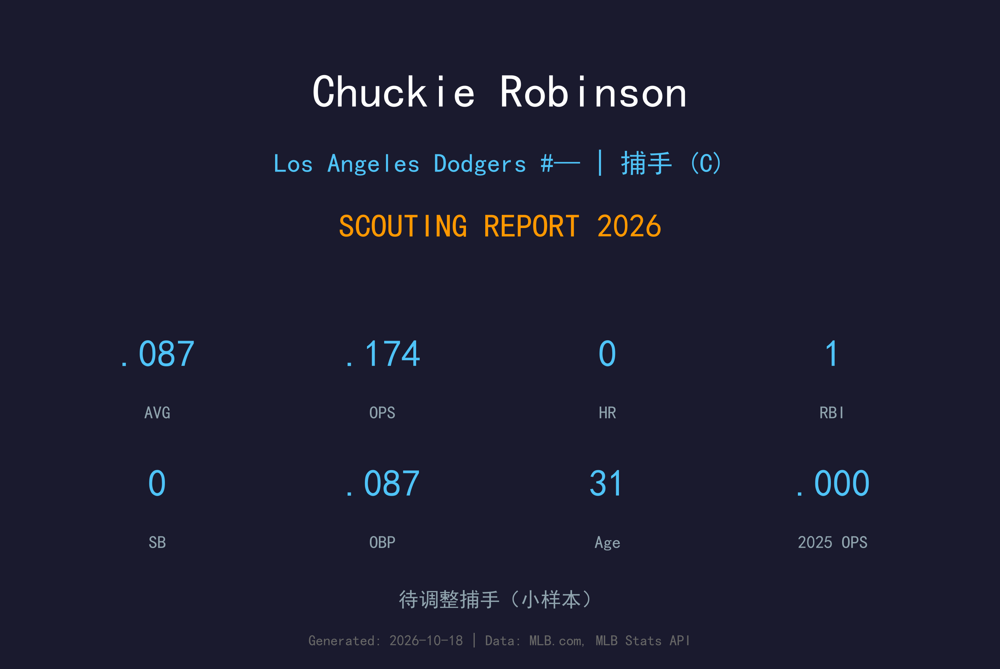
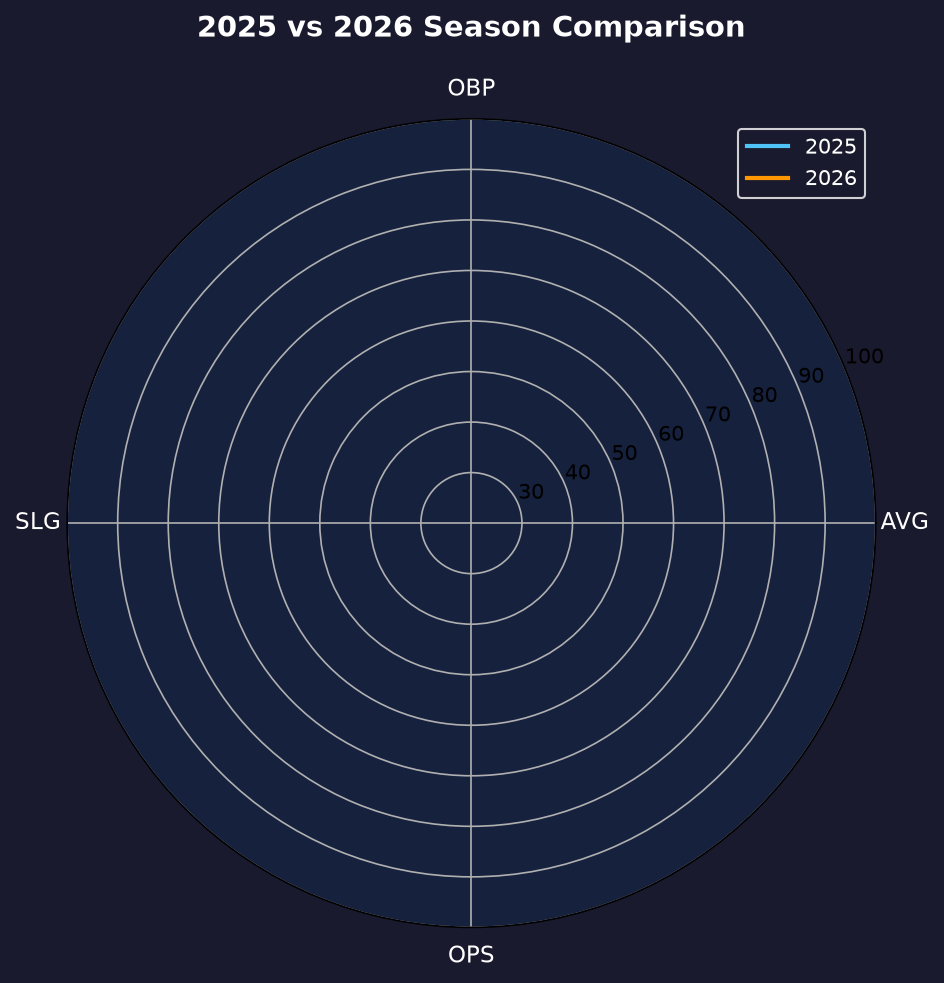
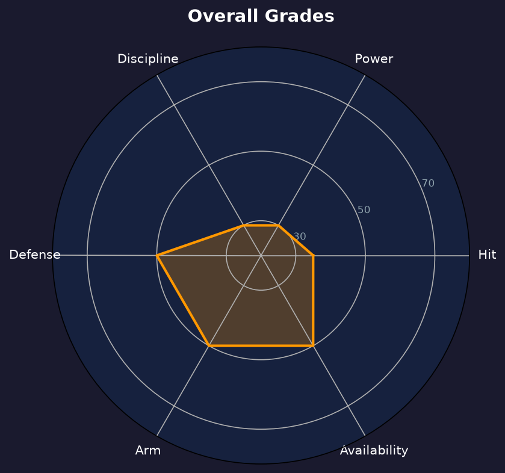

Los Angeles Dodgers | 捕手 | 右投 / 右打 | 救火型替补捕手

Chuckie Robinson 是一名31 岁的救火型替补捕手，生涯 60 场大联盟出赛（红雀、白袜、道奇）缴出 .124/.157/.176。他的价值不在打击，而在"任何时候都能穿上装备蹲满九局"的可用性。
2026 年 6 月 11 日，Will Smith 伤缺期间他被道奇从 3A 紧急上调，8 场出赛 23 打数仅 2 支安打（.087）、1 分打点、0 保送 5 三振。7 月 4 日被下放后，他在 8 月 3 日又被叫回一天，随即再度被 DFA；8 月 12 日 3A Oklahoma City 直接将他释出，他转投勇士 3A Gwinnett 打完赛季。
这是典型的"第三捕手"生命周期：大球队需要他时随时顶上，伤病危机解除后第一时间被舍弃。31 岁的他 2026 年 10 月 14 日已加盟墨西哥冬季联盟 Águilas de Mexicali 延续生涯。
2016 年选秀第 31 轮被红人选中，在小联盟沉浮六年后，2022 年 8 月 24 日完成大联盟首秀，当年 25 场敲出 2 轰、5 分打点。
26 场出赛（生涯单季最多之一），但 76 打席仅缴出 .129/.197/.129、0 轰 0 打点，进攻彻底熄火。
5 月被天使 DFA 后，被道奇捡走又 DFA，9 月转勇士并登上 1 场大联盟。12 月 18 日与道奇签下小联盟合约。
6 月 11 日 Smith 伤缺时被紧急上调，为道奇出赛 8 场；7 月与 8 月两度进出名单，8 月 12 日被 3A 释出，转投勇士 3A 打完赛季，10 月赴墨西哥冬季联盟。
极小样本警告：23 打数仅 2 安，且 2 安均为 singles，0 保送——.087/.087/.087 意味着他上垒的每一次都是靠安打，而 91.3% 的打数以出局告终。

| 赛季 | 球队 | G | PA | AVG | OBP | SLG | OPS | RBI |
|---|---|---|---|---|---|---|---|---|
| 2024 | Chicago White Sox | 26 | 76 | .129 | .197 | .129 | .325 | 0 |
| 2025 | Los Angeles Dodgers | 1 | 2 | .000 | .000 | .000 | .000 | 0 |
| 2026 | Los Angeles Dodgers | 8 | 26 | .087 | .087 | .087 | .174 | 1 |
把三年放在一起看，Robinson 的大联盟打击是持续的、结构性的低迷：生涯 60 场 164 打席 .124/.157/.176、5 保送 42 三振。他不是"还没准备好"，而是"这就是他"——一名以防守和可用性换取大联盟席位的 pure backup。评价他必须用这个框架，否则 .087 看起来是灾难，放在角色里只是不及格。
23 打数 2 安、0 保送、5 三振——Robinson 的打席几乎没有任何威胁。他的挥棒路径平、力量普通，球打进场内也多是软弱滚地。生涯 ISO 仅 .052，说明连"偶尔把球打穿"的意外都很少发生。2022 年红人时期的 2 轰是他仅有的长打记忆。
Robinson 的接球、阻挡与配球基本功扎实，215 磅的体格足以整季蹲捕；更重要的是他"随时准备好"的职业态度——2026 年 8 月 3 日那次"叫回一天再 DFA"的荒诞经历，很多球员会心态崩掉，他安静接受并继续等下一次电话。这类 intangibles 是 3A 捕手市场的硬通货。
8 场 26 打席的 .087 不应被当成他的真实水平——3A 近年的打击成绩显示他大约在 .220-.250 区间。但即便把样本放大三倍，他的 OPS 大概率仍在 .500 上下。道奇需要的是 Smith 身后的"安全气囊"，他扮演了角色，然后被更年轻、更便宜的选择替换，这就是第三捕手的标准结局。

纯防守型第三捕手，名单边缘的消耗品
C+ 级 / 捕手深度
Robinson 的 2027 年将从墨西哥冬季联盟的表现决定。他的现实路径是继续以"随时待命的 3A 捕手"身份在小联盟合约间漂流，等待某支大联盟球队的主力捕手受伤——那是他唯一能回到大联盟的场景。
2026：6/11 因 Will Smith 伤缺被紧急上调（8 场 .087、1 打点）；7/6、8/4 两度 DFA；8/12 被 3A Oklahoma City 释出；8/18 加盟勇士 3A Gwinnett 打完赛季；10/14 赴 Águilas de Mexicali 打墨西哥冬季联盟
2027：小联盟合约漂流，等待下一个伤病窗口
2028+：34 岁前后若仍未站稳，可能转教练或退出 affiliated 棒球
Chuckie Robinson 1994 年 12 月 14 日出生于美国伊利诺伊州丹维尔（Danville, Illinois）。2016 年 MLB 选秀，辛辛那提红人在第 31 轮选中了这位本州捕手——一个典型的"低顺位、靠勤奋爬"的故事起点。
他在红人农场体系待了六年，从 1A 一路蹲到 3A Louisville，2022 年 8 月 24 日终于登上大联盟，当年 25 场敲出 2 轰。2024 年他转投芝加哥白袜，26 场出赛但进攻完全熄火；2025 年是他最漂泊的一年：天使、道奇、勇士三度易主，12 月与道奇签下小联盟合约。
2026 年 6 月 11 日，Will Smith 的伤情让 31 岁的 Robinson 第三次披上道奇战袍。8 场比赛、26 个打席、2 支安打——数字很寒酸，但每一次主力捕手蹲下又站起的回合里，他都稳稳接住了投手的每一颗球。8 月 12 日被释出的那天，他没有公开发表任何怨言；三个月后，他出现在墨西哥墨西卡利的冬季联盟赛场上，继续蹲他热爱的本垒板。对大联盟最深处的球员来说，这不是失败，而是生存。